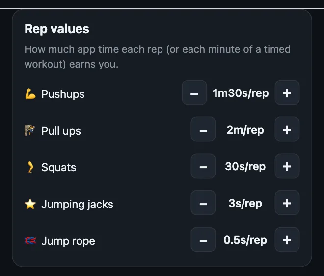

How much screen time should a pushup be worth?
Hey y'all! In HonorFit every rep you log buys app time, and you decide the price. That's the most common question I get after people set it up: what should a pushup be worth? A minute? Ten seconds? Here's how I think about it.
The defaults
If you never touch anything, this is what you get:
| Exercise | Earns by default |
|---|---|
| 💪 Pushups | 1 minute per rep |
| 🧗 Pull ups | 1m30s per rep |
| 🔥 Situps, 🦵 Squats | 30 seconds per rep |
| Any exercise you add | 30 seconds per rep |
| Timed workouts (walk, yoga, HIIT) | 30 seconds per minute |
| Distance workouts | 5 minutes per km, or 8 per mile |
| 👟 Steps | 3 minutes per 1,000 steps |
So 20 pushups is 20 minutes of Instagram. For a lot of people that's about right to start. For others it's way too generous or way too stingy. Which one are you?
A one-line way to pick
Think about two numbers:
- How much time in your blocked apps feels OK on a normal day? Be honest, not aspirational.
- How many reps would you actually do for it, spread across the day?
Then divide: value per rep = time ÷ reps. Want an hour of TikTok for 60 pushups? 1 minute a rep. Want that same hour but you're good for 120 squats? 30 seconds a squat. That's really all there is to it.
If the answer to number 2 is “not many”, that's fine too. Price the reps high, and use a daily baseline (Settings, free) to start every day with some time already in the bank.
Some setups to steal
| Exercise | Each rep earns | What a set gets you |
|---|---|---|
| Pushups (beginner) | 1m30s | 10 pushups = 15 minutes |
| Pushups (you've been at this a while) | 30 seconds | 40 pushups = 20 minutes |
| Jumping jacks | 3 seconds | 100 jacks = 5 minutes |
| Jump rope (per skip) | 0.5 seconds | 600 skips = 5 minutes |
| Pull ups | 2 minutes | 5 pull ups = 10 minutes |
| Running (distance) | 6 minutes per km | a 5K = 30 minutes |
The pattern: the easier and faster a rep is, the less it should be worth. A jumping jack takes about a second, so it shouldn't buy the same as a pull up.
The steppers got finer in 1.18.0
Until recently the smallest value was 5 seconds, which made super-fast reps (jump rope, jumping jacks) awkward to price, and going from 3 minutes to 10 minutes took forever. A user emailed about both, so in 1.18.0 the −/+ buttons walk a smarter ladder:
- Under 5 seconds: 4, 3, 2 and 1 second, then 0.5, 0.25 and 0.1 seconds.
- 5 seconds to 1 minute: 5-second steps.
- 1 to 3 minutes: 15-second steps.
- 3 to 10 minutes: 30-second steps.
- Over 10 minutes: 1-minute steps.
You'll find them in two places:
- Settings → Rep values: one −/+ row per exercise. Quickest if you just want to tweak a price.
- Settings → Exercises → Edit: the full editor, where you also add, rename and remove exercises and switch between reps, minutes and distance. The full walkthrough is in how to customize your exercises.

Signs your price is wrong
- You catch yourself logging reps you didn't do. Your time is too expensive. That's the honor system telling you something. Raise the values a step at a time until you don't feel the urge.
- Your balance never runs out. Your time is too cheap. Lower the values a step or two, or block one more app.
- You do your reps and resent it. Probably the wrong exercise, not the wrong price. Swap in something you don't hate. A walk counts. So do gentler moves.
- You bank hours and blow them all at night. Turn on Reset at midnight (free) so unspent time doesn't pile up.
Give any new setting about a week before you change it again. The first couple of days are weird no matter what.
Hard mode and sick mode
For days that don't fit your usual setup, there's a 💀 Hard mode button you can put in the home header (Settings → Hard & sick mode, free). Tap it once and every rep earns half. Tap it again for 🤒 sick mode, where every rep earns double, for when you're under the weather. Tap again to go back to normal. Your actual values never change, so there's nothing to undo.
Not a trainer: I make the app, I'm not a coach. If an exercise hurts, stop, and if you've got an injury or a health condition, ask someone who knows your body what's right for you. Then set HonorFit up around that.
HonorFit Blocker is a free app blocker for iPhone and Android. You pick the exercises and what they're worth. Honor system, no camera, nothing leaves your phone.